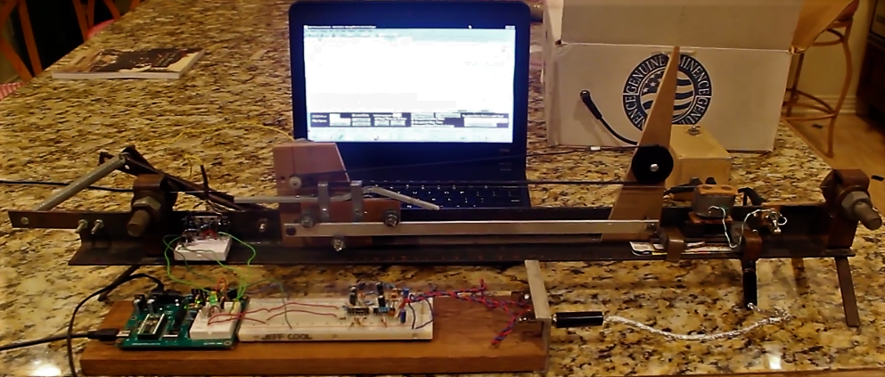

I made this single string instrument as the final project for a digital control laboratory class. The course was basically a walk through of a lab manual written for the Parallax Basic Stamp -- which amounted to the implementation of a series of very basic digital temperature controllers. The final project was supposed to be a creative implementation of some of the methods described in the manual.
So this is the device I made:
It is very unnatractive because I made it hastily out of scraps that I had on hand. Basically what we have is a frame made from a length of .120" angle to which is fixed a couple pieces of rectangular tubing with large bolts sticking through them. These act as the bridge and nut. On the bridge side (left in the picture above) the bolt has a hole drilled through it to retain a guitar string. This bolt is also rotatable with the "wammy bar" assembly comprised of the several short pieces of flat bar and the spring. This allows detuning of the string. Not visible is the tuning head I took from an old guitar mounted behind the frame on the nut side (right). Left of the nut we have the thing wrapped in duct tape, which is the "humbucking" pickup I made.
The output of this pickup goes to the LM386 amplifer, which is in the small wooden box behind the pickup, and which feeds the speaker in the cardboard box behind that. The pickup also feeds the input of the signal conditioning circuit shown on the breadboard, which is just some lowpass filters and comparators. The output of the signal conditioner feeds a digital input of the basic stamp, and four digital outputs are used to control an H-bridge motor controller which is shown on a small breadboard fixed to the frame. The motor is mounted behind the piece of MDF with the small white pulley on it. The belt that runs around the two pulleys is attached to the little cart which rolls along the aluminum track when the motor is running. And there you have it.
The cart/slide has a large enough friction and a small enough mass so that the transfer function of [position]/[input drive] can be reasonably approximated as an integrator K/s. However the relationship between the position and the frequency of vibration is nonlinear. Instead of attempting to linearize the plant model about some narrow range of positions, I decided just to ignore it, and see how the simple digital PID controller we used to control the temperature inside a test tube could adapt to it. I have a video of it on youtube. Now, since I didn't have a great way to excite the string, I introduced a rather long delay in between measurements and output drive to allow me enough time to pluck the string while filming.
Also kind of funny is the type of drive the controller is applying. Instead of the reasonable thing (applying a PWM signal with duty ratio proportional to the calculated controller drive -- D = K*U(s)), a constant drive is applied for a calculated interval, such that the interval is proportional to the calculated control effort. This is kind of like a low frequency PWM, and it is a really bad idea especially with the amount of delay I added to the system -- as can be seen toward the end of the video, it leads to instability. Never again!